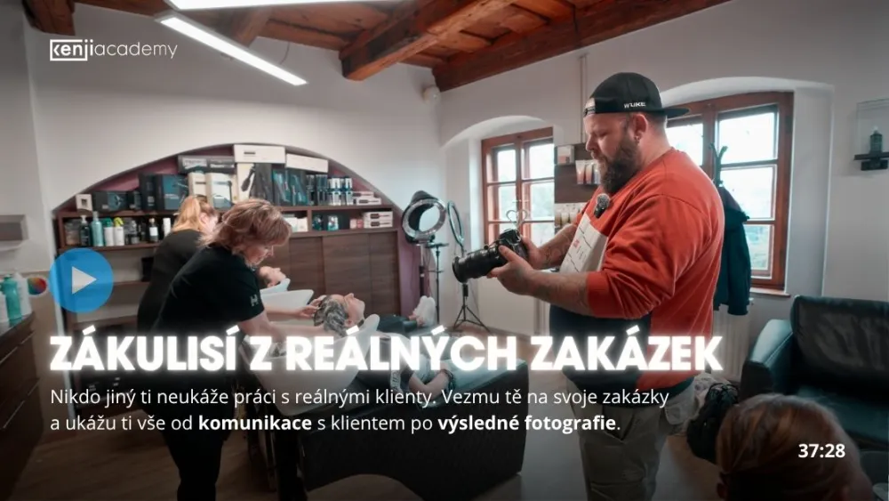

1
Zaregistruj se zdarma
Za pár vteřin jsi uvnitř — stačí e-mail. Bez karty, bez závazku.
Kenji Academy
Kurzy, komunita, nástroje a reálné byznys know-how na jednom místě. Provedeme tě celou cestou — od první fotky až k vlastním platícím klientům.
 ★★★★★
★★★★★

Ať začínáš od nuly, nebo už fotíš — najdeš tu vše, co potřebuješ:
Jak to funguje
Žádná složitost. Během pár minut jsi uvnitř a můžeš začít růst.
Za pár vteřin jsi uvnitř — stačí e-mail. Bez karty, bez závazku.
Databáze, kurzy, Kenji AI i kalkulačka hodinovky — hned k dispozici.
Sdílej práci, ptej se, získej feedback a posouvej se s ostatními tvůrci.
Všechno na jednom místě
Web i mobil. Žádné hledání po deseti aplikacích — všechno, co potřebuješ k růstu, máš přehledně pohromadě.
Technika, editace, byznys, právo i daně — vysvětlené lidsky a po lopatě.
Od základů a techniky přes svatby až po focení jako byznys.
Feed, feedback na tvoje fotky, second shooting a lidi, co ti fakt poradí.
Vlastní asistent na focení i byznys. Zeptáš se kdykoliv, odpoví po lopatě.
Systém, který tě dokope z nuly na první platící klienty.
Spočítáš si reálnou cenu, pod kterou se ti nevyplatí jít.
Živé streamy, kde se ptáš na cokoliv, a srazy naživo.
Ověříš si, co umíš, a projdeš od bílého po černý pásek.
Ukázka obsahu

Kdo tě povede
Focením se živím a mentoruju tvůrce, kteří chtějí to samé. Dostaneš zkušenosti z praxe — ne teorii od někoho, kdo si tím sám neprošel.
Nejsi na to sám. Za tebou stojí komunita lidí, kteří jdou stejnou cestou a navzájem se táhnou nahoru.
Zkušenosti členů
★★★★★ 4,65 · 150+ hodnocení od členů
Ze začátku jsem byl skeptickej, kurzů je na netu spousta. Ale díky KA jsem zjistil, že dělám spoustu věcí špatně 😁 Skvělý vhled pod pokličku profíka a komunita, která se navzájem podporuje. Na nic nečekej 🤘
Chtěla bych strašně poděkovat za vytvoření téhle komunity — plné skvělých lidí, podpory a webinářů. Je to tu našlapané informacemi z vlastních zkušeností a pořád přibývá další obsah.
Jednoznačně největší přínos, co se know-how týče. KA neřeší jen focení, ale i byznys, propagaci, finance i právo. Místo, kde fotograf fakt načerpá. Palec nahoru 👍
Že jsem se mohl připojit ke Kenjimu, je pro mě dar z nebes. Našel jsem tu rady, tipy a triky, o kterých jsem neměl tušení. Doporučuju každýmu, kdo to s focením myslí vážně.
KA není jen sada videí. Je to promyšlený projekt, za kterým je vidět srdce 🧡. Diskuse, rozhovory se specialisty, soutěže, AI pomocník, webináře i fotosrazy. Vlastně — je to rodina.
Nečekal jsem od toho moc, ale mýlil jsem se. Kromě rad a postřehů mi to dodalo i jiskru pustit se do toho naplno. Skvělá komunita je třešnička na dortu. Díky!
Partneři
Spolupracujeme s partnery, díky kterým jako člen získáváš výhody a slevy.
Tvoje cesta začíná tady
Přidej se ke komunitě tvůrců, kteří to myslí vážně. Vstup je zdarma — zbytek objevíš, až budeš uvnitř.
Začni zdarma →